Archives Actus des Caraïbes
|
Pour consulter une archive, cliquez sur un lieu ci-dessous |
| 2009 Avant le départ |
| ... |
| 2009 Panama-Galapagos |
| 2009 Gambier |
| 2010 Marquises |
| 2010 Tuamotu |
| 2010 Tahiti |
| 2010 Cook-Niue |
| 2010 Tonga - Fidji |
| 2011 Nouvelle Zélande |
| 2012 Australie |
| 2012 Polynésie |
| 2013 Hawaii |
| 2013 Canada |
| 2013 USA |
| 2014 Costa Rica |
| 2015 Costa Rica |
| 2016 Costa Rica |
| ...ou revenez aux actualités |
19 juin 2009 - Colon, fin de l'étape Caraïbes
Depuis les San Blas, nous avons longé la côte panaméenne, jusqu'à une petite bourgade qui fut jadis un centre commercial important: Portobello.
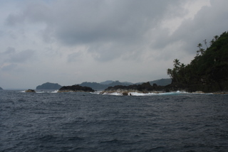
Le rivage nord du Panama est vraiment très bien fourni en végétation et très découpé. Cela nous a donné en spectacle de nombreuses criques bordées d'une végétation abondante parsemée d'habitations diverses. Aussi curieux que cela puisse être, nous avons vu des cahutes faites en branches de palmier, des masures en taule ondulée mais aussi des demeures au style colonial, donnant sur la mer et entourées de gazon anglais.
Nous avons mouillé à Portobello au fond d'un estuaire aux eaux troublées par les alluvions de latérite. Nous y avons même été faire du shopping, sur les conseils d'un couple d'américains rencontrés au mouillage. Nous avons ainsi pu acheter de la farine pour faire le pain ainsi que des nouilles pour agrémenter nos soupes Maggi pendant les quarts.
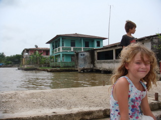
Le lendemain, nous sommes repartis vers l'ouest. Nous avons franchi l'entrée du port de Colon vers 16h, entourés d'un nombre impressionnant de cargos (dont l'un a bien failli nous percuter lors de sa manoeuvre de mouillage). Nous avons immédiatement été à Shelter Bay, à l'ouest de Colon, de l'autre côté de la baie, pour trouver un refuge destiné aux voiliers.
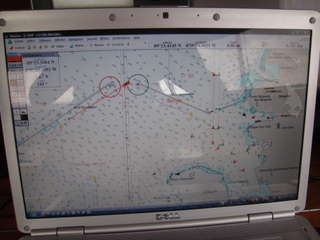
Effectivement, nous avons été accueillis dans cette Marina par Dave, un Africain du Sud très affable, qui s'est essayé à l'Afrikaans avec Cécile, non sans un certain humour. Dave est le chef de quai de la Marina et est un homme de ressources.
16 juin 2009 - San Blas - Repli stratégique
Vers 16h, la température oscillait autour de 35°C, le vent était nul et l'humidité pas loin de 100%. Le cessez-le-feu diurne touchait à sa fin et nous étions convaincus que, dès la nuit tombée, les hostilités reprendraient de plus belle. Cela n'empêcha nullement les enfants d'improviser un voyage en gondole sur le trampoline, dont l'objet, si j'ai bien compris, était de sauver la princesse Paladia et de la ramener en son royaume, quelque part au large des Galapagos.
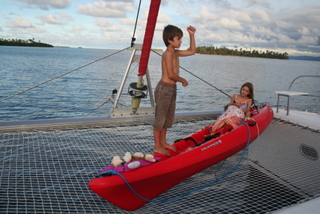
Pendant ce temps, je préparais avec soin notre plan de défense anti-mouchettes pour la nuit, dans le plus grand secret afin de bénéficier de l'effet de surprise. Au crépuscule, nous avons revêtu nos tenues de combat: pantalon long, chemise à manches longues et, surtout, chaussettes. Pour les zones dénudées, j'avais prévu un sprouït anti-moustique 'tropical'. Ainsi protégés, nous avons installé notre périmètre de défense sur le pont, où une petite brise soufflait.
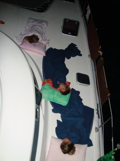
Ce plan machiavélique troubla nos ennemis. Nous étions sur le point d'enfin remporter une bataille lorsque, contre toutes les règles de la guerre, un orage éclata, inondant notre périmètre. Nous opérâmes donc un repli en bon ordre et achevâmes la nuit dans nos cabines rafraichies. Le lendemain, nous quittions ces lieux certes magnifiques, mais qui resteront dans nos mémoires comme le théâtre d'une guerilla sans merci, au cours de laquelle nous avons subi de lourdes pertes.
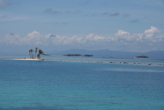
15 juin 2009 - San Blas - Moustiques 2 / Laruel's 0
Nous pensions leur avoir échappé. Nous avions levé l'ancre et croisé plein ouest. Vers midi, une petite brise nous rafraichissait. Hélas, dès la nuit tombée, le cauchemar a recommencé. Plus un souffle de vent et une température tropicale. Les conditions étaient idéales pour eux et, de fait, nous avons dégusté.
Le plus énervant, c'est qu'on entend pas le bruit caractéristique des moustiques attaquant en piqué. En fait, on n'entend rien, ce qui rend la guerre encore plus stressante: on ne se rend compte qu'on s'est fait mangé que lorsque ça commence à chatouiller. A l'aube, j'ai enfin pu identifier notre ennemi: il ne s'agit pas de moustiques mais de minuscules mouchettes, à peine visibles, mais dotées d'un système de propulsion dernier cri. Ces petites bestioles peuvent largement franchir notre moustiquaire, même en volant en escadron. Résultat: ce matin, j'ai compté 50 piqûres sur mon pied droit. Et, à moins que le vent ne se lève, je ne vois pas comment on échappera à la boucherie dès la nuit prochaine...
Nous avons donc repris la mer, en direction du canal, en nous arrêtant près d'un village de pêcheurs, sur une petite île protégée par le récif.
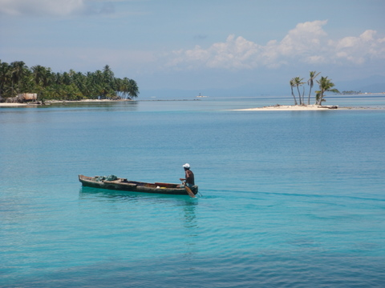
Dès que nous avons mouillé l'ancre, les pirogues surgirent de tous côtés, à tel point que l'on se demandait d'où pouvaient bien venir tous ces braves gens (sûrement pas de l'île qui doit mesurer 100m de long, à tout casser). On nous a même proposé 8 langoustes et un beau crabe pour 15$...Mais, pour finir, on a donné 1$ à un ancêtre qui avait pagayé jusqu'à nous pour nous proposer des noix de coco. On lui a laissé ses noix mais il nous a rendu un fier service: il a emporté nos sacs poubelle, dont on ne savait que faire et qui empestaient la baille à mouillage.
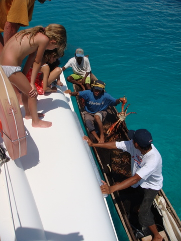
14 juin 2009 - San Blas
Après la pluie d'hier, le soleil est revenu nous darder. On en a profité pour faire le tour d'une des îles en kayak. Nous avons également fait un snorkeling de près de 2h avec les enfants. Au passage, nous avons rencontré un requin et une grande raie bleutée.
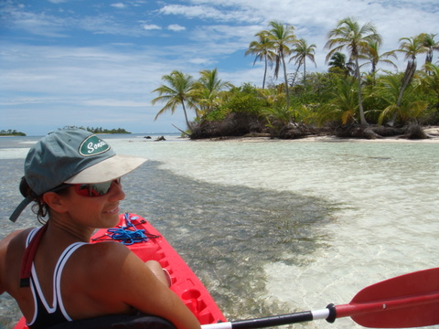
En fin de journée, le vent est tombé et la nuit la plus longue a commencé. Pour rappel, nous sommes à Panama par 9° de latitude nord vers la mi-juin. Autant dire qu'il fait chaud. En l'absence du moindre courant d'air, les cabines du bateau se sont transformées en sauna et nous transpirions à grosses gouttes malgré une immobilité totale. Excédés, nous avons été dormir à la belle étoile, sur le pont du bateau. Et ce fut la curée !! Des hordes de petits insectes volant nous attendaient et, pendant toute la nuit, nous avons servi de plat principal au banquet des moustiques. De mémoire de Cécile, nous avons passé une des nuits les plus atroces de notre vie. En ce qui me concerne, 17 piqûres, rien que sur le pied gauche...
Au petit matin, Dieu m'est apparu et il m'a donné la solution: il faut changer de mouillage. C'est ce que nous avons fait (car il est sage de suivre les conseils de tout puissant). Après une navigation de 5 nm, nous avons trouvé un haut-fond entre deux îles, suffisamment éloigné des rivages pour que nous soyons hors de portée des moustiques et, espérons-le, aérés par les vents du large.
Nous avons eu la visite régulière des autochtones, qui pour nous vendre des langoustes, qui pour nous saluer. Les indiens Kunas, qui vivent aux San Blas, semblent assez sociables. On les a vu défiler deux par deux, sur leur pirogue, pour nous proposer de l'essence (sic!) ou des colifichets, et nous leur avons laissé de la citronnade et de l'huile d'olive. Il faut dire que nous sommes totalement seuls au mouillage entre deux îles et que chacune d'elle est habitée si l'on en juge par les cahutes en bois et les lumières qui se réveillent à la tombée de la nuit.
13 juin 2009 - San Blas
Finalement, on est arrivé aux San Blas à 8h du matin, en finissant la navigation à 2 noeuds, sur le moteur babord uniquement, pour ne pas devoir atterrir dans le noir. Nous avons directement pris cette photo pour immortaliser nos premières impressions.
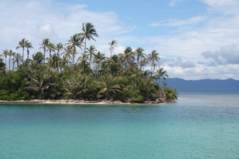
Nous avons rapidement eu la visite de deux autochtones, perchés sur leur embarcation de bois vermoulu. Craignant quelque perfidie, nous étions sur nos gardes tout en les accueillant avec le sourire et notre meilleur espagnol: "Ola, que tal ?". Dès qu'ils nous eurent accostés, nous avons pu constater que leur barque était pleine de vivres: c'est le supermarché flottant local. Nous avons pu refaire le plein de légumes et fruits frais, sans quitter le bateau: ananas, pommes, poires, concombres, tomates, poivrons, ail et même pamplemousses. Le tout pour 28$. La vie a du bon.
Hélas, il faisait gris et la pluie n'a pas tardé à faire son apparition. Cela n'a pas empêché les enfants de plonger dans une eau anormalement chaude (on n'a pas de thermomètre mais je suis sûr qu'elle avoisine les 30°C). Comme la pluie ne cessait, nous avons mis le plan ORO - niveau 3 - en place. Nous avons 'emballé' le cockpit (y compris le bimini) avec une bâche en plastique que nous avons acquise à cet effet. L'intérêt de cette opération est que le cockpit reste viable, c'est à dire au sec même par forte pluie, ce qui nous donne un espace de vie aéré non négligeable. C'est d'ailleurs assis à la table du cockpit que je me suis connecté à Inmarsat pour mettre à jour le site. J'avoue que c'est dans ces moments que j'apprécie la technologie moderne et que j'admire d'autant plus nos glorieux prédécesseurs des années 70 qui n'avait pas notre niveau de confort (mais comment faisaient-ils pour vivre sans GPS, ni téléphone satellite, ni même internet...).
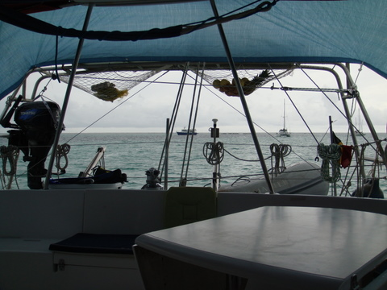
8 au 12 juin 2009 - Traversée Aruba vers San Blas 570 nm Part II
Jour 3.
Après avoir brièvement soufflé de secteur SW, le vent s'est mis au secteur WSW autour des 7 noeuds, soit exactement face à nous. Affalée la grand'voile. Enroulé le génois. Démarrés les moteurs. Finie la rigolade.
Il faut cependant être honnête: l'absence de vent rend la mer très calme et, à part le ronron des moteurs, notre confort est bien meilleur qu'avec 25 noeuds de vent et des creux de 3m. Pour se faire pardonner nos conditions peu propices à l'exercice de la voile, Dame Nature nous donna l'occasion d'assister à un spectacle étourdissant: les orages de chaleur sur la mer. Au loin, on voyait le ciel se lézarder régulièrement et de fréquents et puissants éclairs illuminaient les nuages. Curieusement, nous semblions être les spectateurs privilégiés car, malgré ce feu d'artifice qui nous entourait de toutes parts, nous jouissions d'un ciel étoilé.
Jour 4.
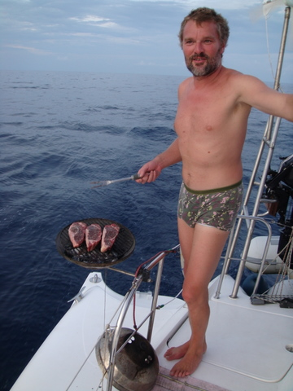
Il a fait tellement calme qu'on a été nager autour du bateau et qu'on s'est fait un barbecue en pleine navigation.
Nous avons aussi solennellement célébré un événement marquant de notre périple: nous avons franchi notre premier fuseau horaire et ce n'est pas sans émotion que nous avons remonté le temps: toutes les horloges du bord doivent être retardées d'une heure.
Jour 5.
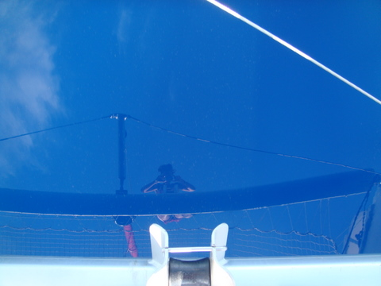
Intrigant...cette photo est le reflet de Cécile dans l'eau à la proue du bateau.
Le train-train s'est installé. Il ne s'est rien passé et l'absence de vent fut totale. Devant le mécontentement croissant de l'équipage et le risque de mutinerie, le capitaine a dû trouver les subterfuges les plus habiles comme organiser des cours particuliers pour l'EAD (école à distance) ou projeter des films (quand le moteur tourne, l'électricité est disponible en quantité presque illimitée). Vers 10h du soir, un orage a éclaté et la pluie s'est mise à tomber mais, curieusement, le vent ne s'est pas levé. Contrairement à l'avant-dernière nuit, nous étions en pleine action et les éclairs crépitaient dans tous les sens autour du bateau tandis qu'une pluie antédiluvienne s'abattait sur notre frêle esquif. Nous étions toujours au moteur et, bien à l'abri dans le carré, j'ai considéré avec soin l'ensemble des paramètres de navigation et j'ai décidé de ralentir les machines pour éviter d'arriver en pleine nuit. Selon mes calculs, nous devrions toucher terre vers 8h demain matin.
8 au 12 juin 2009 - Traversée Aruba vers San Blas 570 nm Part I
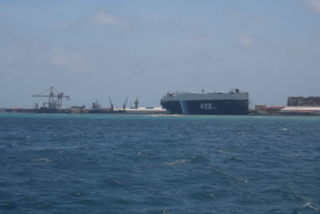
Le port d'Aruba, équipé pour recevoir les plus grands paquebots.
Après avoir rempli les formalités d'entrée et de sortie à Aruba, nous avons levé l'ancre, direction: les San Blas, archipel situé à 70 miles à l'est de l'entrée du Canal. La traversée est longue de quelques 550 nm et les prévisions météo, quoique sécurisantes, ne sont pas optimales puisqu'on annonce peu de vent à partir de mardi soir et des précipitations importantes.
Jour 1.
Les premières heures de navigation ont été venteuses, à tel point que nous avons battu notre record de distance en 24h: près de 165 nm, soit une vitesse moyenne légèrement inférieure à 7 noeuds. Et tout cela avec une seule voile: notre vaillant génois. La mer était bien formée et nous nous sommes écartés du plateau continental pour éviter les courants côtiers qui créent une mer hachée avec des vagues désordonnées.
Vers 16h, nous avons eu la visite d'un groupe de dauphins, venus faire le show devant le bateau. Cécile en a profité pour faire 200 photos, dont 3 acceptables et une bonne ;o).
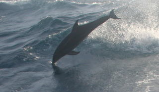
Jour 2.
Durant les premières heures, il ne s'est rien passé de notable. Les conditions n'ont guère varié, sauf le vent qui a changé de secteur et est passé ENE, soit en plein portant, ce qui nous a obligé à tirer des bords régulièrement (empannages).
Au milieu de la nuit, les quarts étant propices à la gestation d'idées brillantes puisqu'il n'y a pas grand'chose à faire, j'ai eu l'idée d'indiquer notre destination sur notre cartographie de navigation (celle qui se trouve au poste de pilotage). Et là, grande surprise. Nous pensions disposer d'une cartographie des Caraïbes, voire de l'Amérique Centrale. Et pourtant, aussi minutieuse qu'ait été notre préparation, nous n'avons pas pensé à vérifier que les San Blas faisaient partie des Caraïbes (ou que ces dernières faisaient partie de l'Amérique Centrale). Apparemment, pour les concepteurs de la cartographie, la réponse est: "Non". En conséquence, nous n'avons ni les San Blas, ni la zone du canal, sur notre cartographie. Donc, on fera l'approche à vue - parce qu'en plus, on n'a pas de cartographie papier de ces lieux :-(. Heureusement, nous avons également une cartographie mondiale sur le PC, en ce compris Panama, Les Malouines et l'Antarctique, encore que, pour ces dernières, je ne m'y fierais qu'à moitié...
Au petit matin, le vent a viré lentement, s'établissant autour des 15 noeuds de SW. Nous avons donc changé d'allure (passant du portant au près) et, pour la première fois depuis notre départ, nous avons hissé la grand'voile.
7 juin 2009 - Aruba
Il y a 160 nm entre Los Aves, Isla Larga, et Aruba. Nous sommes partis à 10h du matin, et nous sommes arrivés le lendemain, à 10h du matin également, après avoir passé une nuit pour le moins venteuse. L'ambiance à bord était donc plutôt morose car chacun se concentrait sur son équilibre, tant il est vrai que le vent combiné à la houle confère au bateau des mouvements saccadés et imprévisibles. Seules Kenya et Syr Daria ont trouvé une parade efficace: le hamac.
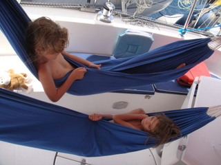
Ceci dit, les hamacs, c'est bien pour être à l'abri des mouvements du bateau mais ce n'est pas très pratique pour le piloter. Donc, Cécile et moi avons assuré nos quarts et, pour la première fois, nous avons aussi eu toutes les peines du monde à dormir pendant nos anti-quarts vu le potin qui règnait à bord (en plus du secouage).
Quoi qu'il en soit, nous sommes arrivés à Aruba au matin et nous avons immédiatement mis l'annexe à l'eau pour faire des courses. Il faut bien reconnaître qu'en dépit de son architecture style Disney Land, Aruba offre des services inattendus puisque la grande surface que nous avons visitée tenait plus de Rob que du Cora, raison probable pour laquelle nous l'avons littéralement pillée.
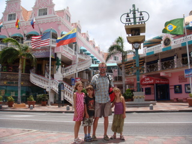
5 juin 2009 - Los Aves
D'après les réactions des uns et des autres, je constate qu'il existe une demande croissante pour des photos de sable fin et de mer bleue. Los Aves me paraît un endroit particulièrement indiqué pour satisfaire ces demandes. Alors voici une photo prise par babord du Let It Be. Et je vous assure que ce n'est pas un trucage...
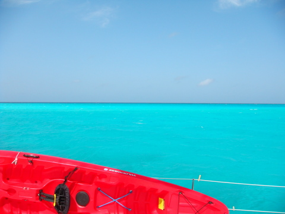
L'épisode des pêcheurs m'ayant vexé (quoique je n'en ai rien laissé paraître, maîtrisant mon émotion comme Ioda apprenant qu'Annakin l'avait trahi), j'ai décidé de sortir la grosse artillerie: le harpon flambant neuf acheté en Martinique. Et, à voir mon air un peu niais sur la photo, on comprend pourquoi j'ai refusé de prendre une arme à bord.
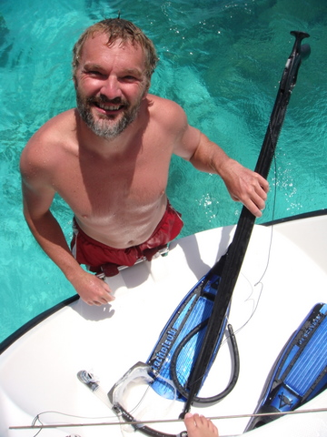
Muni de cet appendice pour le moins volumineux qui a impressionné Cécile car elle n'y est guère habituée, je nageais avec difficulté dans les eaux limpides des Aves. Et pourtant, tel Lucky Luke, j'ai dégainé plus vite que mon ombre et le poisson s'est trouvé sushifié avant même de s'en rendre compte.
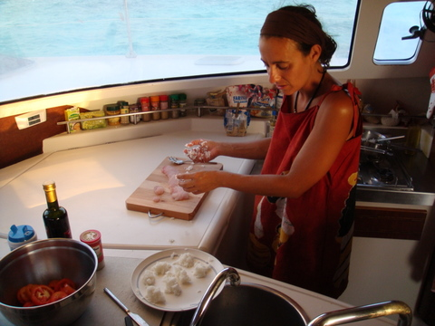
Et les sushis étaient délicieux, parole de Sidney !
5 juin 2009 - Intermède technologique
Sur un bateau, certaines ressources prennent une valeur considérable. Ainsi en va-t-il de l'eau douce. En effet, sans eau douce, pas de douche rincette après la baignade, pas de vaisselle, pas de soin du corps, pas de cuisson à l'eau, pas de lavage de linge, etc.
Sur le Let It Be, nous avons un seul grand réservoir de 800L de capacité (et un réservoir d'eau chaude de 50L dont la chaleur est apportée par le refroidissement du moteur babord). En outre, nous avons un dessalinisateur d'une capacité officielle de 60 L/h. Comme je trouvais cela un peu juste, j'ai construit une gouttière le long de la casquette de pont, afin de récupérer l'eau de pluie.
Tout cela est magnifique mais il est des jours où ma formation d'ingénieur me revient et les labos de Leduc ressurgissent du passé. Dans ces moments, je suis pris d'une envie subite de manip et de graphiques. J'ai donc commencé par étalonner le dessalinisateur: 25L/H au lieu des 60 annoncés... Ensuite, j'ai constaté que la jauge du réservoir se bloquait au taquet lorsque le dessalinisateur avait fonctionné, probablement parce que l'arrivée d'eau de dessal se fait au niveau de la résistance qui mesure le niveau d'eau. Bref, une fois enclenché le dessal, plus moyen de savoir combien il y a d'eau dans le réservoir. Quant à la gouttière, son apport est difficilement quantifiable.
J'ai donc décidé de recourir à un moyen hi-tech pour connaître l'état de mes réserves en eau potable: la technique dite 'du bâton de bois'. Il s'agit en fait d'une latte que je plonge dans le tube d'approvisionnement du réservoir; lequel, par chance, n'est pas coudé. L'eau laisse une trace qui indique son niveau. Il ne reste plus qu'à convertir ce niveau en litres, ce qui ne peut se faire par règle de trois car le réservoir n'a pas une forme régulière. Il faut donc étalonner la baguette par un processus simple: il suffit de vider le réservoir complètement, le remplir de 100L, mesurer la hauteur d'eau et reproduire le processus jusqu'à ce que le réservoir soit plein. C'est ce que j'ai fait, obtenant au passage une règle graduée et la confirmation que la contenance de mon réservoir est de 750L. Sans oublier que grâce à ma règle, je pourrai savoir combien je récupère d'eau de pluie durant un grain.
3 juin 2009 - Los Aves
Avec 25 noeuds de vent plein est, la navigation des Roques vers Los Aves fut courte: 6h pour les 40 miles, sous génois uniquement. La mer était formée et nous avons été bien secoués.
Arrivés sur place, nous avons mouillé face à un bande de terre de 1m de haut, ce qui nous protège de la houle mais pas du vent toujours aussi puissant. Nous avons immédiatement plongé pour voir la position de l'ancre, histoire de nous rassurer et de passer une bonne nuit. Dès les premiers coups de palmes, ce fut l'enchantement: nous avons mouillé au milieu d'ilets affleurant qui abritent une faune et une flore multicolores. Les enfants sont émerveillés par ces grandes patates de corail qui jalonnent le sable par 2m de profondeur. Chaque patate est un véritable dédale de petits passages pour les poissons, ce qui ne manque pas de rappeler une 'ville sous-marine' aux enfants. 
Ils ont donc répertorié les alentours du bateau et baptisé chaque patate. Il y a la ville ronde, mini-ville, Beverly Hills, Sheffield, la ville lointaine, la ville des patates, etc."
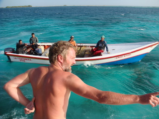
Plus tard dans la journée, nous avons eu la visite de pêcheurs qui nous ont gentiment offert quelques poissons que Cécile s'est empressée de nettoyer sur la jupe arrière. Pour ma part, l'échec est total: depuis qu'on est parti je n'ai eu de cesse de disposer des lignes traînantes munies de leurres plus sophistiqués les uns que les autres chaque fois que l'occasion se présentait. J'ai invoqué les dieux grecs, romains et égyptiens. J'ai expliqué à Sidney que si je n'avais encore rien pris, c'était vraisemblablement parce qu'il n'y avait plus de poissons dans la mer (mais après un snorkeling, il est revenu en disant:'C'est n'importe quoi ton histoire de poissons'.). Et voilà, je n'ai rien attrapé et l'on finit par manger le poisson des autres. Ma réputation de capitaine en a pris un coup mais c'est aussi cela, la dure vie d'aventurier des temps modernes...
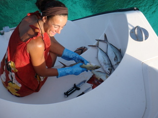
3 juin 2009 - Los Roques
Hier, en fin de journée, le vent s'est mis à souffler de plus en plus fort, s'établissant finalement autour des 25 noeuds. Nous avons néanmoins poursuivi notre périple dans l'archipel, jusqu'à trouver un petit ilôt protecteur pour la nuit.
L'endroit était désert et nous avons pu mouiller sur une longue langue de sable blanc, par 1.3m de profondeur, soit 1.9m, compte tenu du 'pied de pilote', c'est-à-dire de la sécurité que l'on prend sur le profondimètre, que l'on étalonne toujours moyennant un extra de quelques dizaines de cm pour tenir compte de la nature optimiste du genre humain. Ce 'pied de pilote' fait que le profondimètre indique 60 cm de moins que la profondeur véritable. Cela permet aux navigateurs de passer 'tout juste' par 1.3m de fond alors que le tirant d'eau du bateau fait également 1.3m, ce qui démontre indubitablement l'adresse du pilote et lui permet de s'enorgueillir auprès de la gent féminine.
Bref, l'ancre était bien enfoncée dans le sable et malgré le vent, nous avons bien tenu. Cécile s'est donné un peu de temps libre pour observer les pélicans qui pêchaient non loin du bateau, en un incessant ballet, ponctué d'attaques en piqué, genre Stukka ou Spitfire.
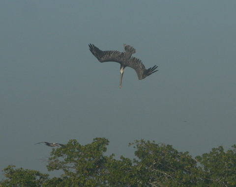
2 juin 2009 - Los Roques
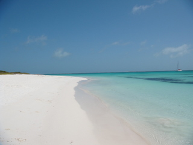
Que dire ? J'ai un peu honte de faire autant de jaloux...mais bon, il faut dire la vérité, n'est-ce pas ? Le bateau en haut à droite, c'est le Let It Be. Non seulement l'endroit est paradisiaque mais en plus nous sommes seuls à en profiter. C'est ça, le vrai bonheur!
Même en cherchant bien, je ne pense pas avoir jamais vu une plage de sable aussi fin, bordée d'eau aussi claire. C'est vraiment étonnant. A tel point que Cécile n'a pu s'empêcher d'égrener le sable en proclamant: "C'est de la farine ! On dirait de la farine."
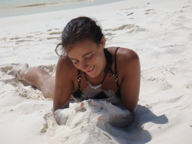
Le spot qu'on a trouvé non loin de Puerto El Roque est assez sympa: une longue plage de sable blanc flanquée de récifs poissonneux que l'on s'est empressé de visiter avec palmes et tubas. Comme on n'est pas loin d'un parc, les poissons sont nombreux et peu farouches. Cela nous a permis de faire un snorkeling hors du commun.
Cécile, d'ordinaire maîtresse de ses émotions, n'en revenait pas. Elle ne cessait de répéter: "Oh Eric, c'est magnifique! Que tu es beau! ". Oui, c'est vrai, j'avoue que j'en rajoute un peu mais Cécile était vraiment très contente.
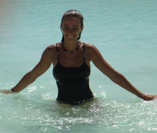
1 juin 2009 - Los Roques
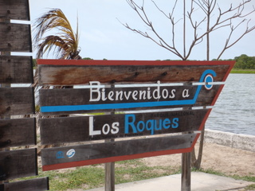
Nous avons touché terre après exactement 72h de navigation, soit à 6h du matin ce lundi. Il faisait à peine clair et nous avons directement rejoint notre lit car la nuit avait été très courte pour cause de manoeuvre d'approche dans le noir total (voir post précédent).
Nous avons mis l'annexe à l'eau pour aller au port (une bourgade d'une centaine de maisons, séparées par des rues de sable fin, sans aucune voiture). Il faut dire que l'île doit bien mesure 1 km du nord au sud et 200m en son point le plus large.
Il y a quand même un mini-ponton en dur, installé pour permettre aux taxi-boat de déposer/enlever leurs clients arrivant en avion. En effet, Los Roques est un parc naturel protégé, constitué d'une centaine d'îles plus ou moins grandes et dont la hauteur ne dépasse pas 5m. Elles sont entourées de récif coralien et de sable blanc, ce qui confère à l'ensemble un caractère très particulier, digne d'attirer les touristes (c'est d'ailleurs pour cela que nous sommes là...).
Donc, on a réussi à trouver quelques légumes et fruits frais pour poursuivre notre voyage. On en a profité également pour manger un bout sur une terrasse en bord de plage, à l'ombre des cocotiers. Kenya et Syr Daria ont pu se détendre avant le repas.
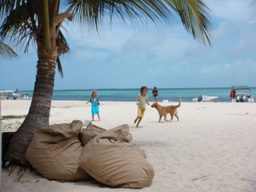
29 au 31 mai 2009 - Première traversée: Ste Lucie vers Los Roques, 350 nm (miles)
Dès potron minet (pour une fois, c'est vrai: il était 5h45 du matin), nous avons levé l'ancre et mis le cap au large, plein ouest. Hélas, le vent était mollasson et au portant. Résultat: nous avons dû nous éloigner du lit du vent pour ne pas déventer le génois et nous nous traînions à 4 noeuds dans une mer avec des creux de +/- 2m. Ceux qui ont déjà navigué savent ce que cela veut dire: la bôme bat au rythme de la houle et le génois se dévente régulièrement.
C'est alors que l'idée jaillit soudain de nos cerveaux ramollis: pourquoi ne pas essayer le spi ? Nous étions certes un peu rétifs à cette idée tant étaient nombreuses les mises en garde que nous avions reçues mais nous nous sommes quand même lancés dans cette nouvelle aventure. Et voici le résultat obtenu après 30 minutes d'effort.
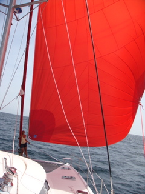
Un miracle ! Non seulement le bateau croise maintenant entre 5 et 6 noeuds mais nous avons pu nous rapprocher du portant tout en gardant le spi stable. Une merveille, je vous dis ! Nous avons affalé le spi à la tombée de la nuit, par mesure de sécurité car il faut bien dire que cette voile n'est pas très manoeuvrante. Là encore, l'opération s'est révélée plus aisée que ce que nous anticipions: la chaussette s'est gentiment glissée autour du spi, nous avons libéré la drisse et les écoutes et nous avons rangé le tout dans la cabine de pointe tribord.
Toutes ces manipulations n'ont guère perturbé les enfants qui ont joué à Darth Vador toute la journée. Sauf Syr Daria qui a réussi à donner un petit coup de téléphone à sa copine Laure.
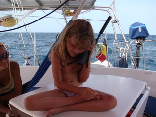
La nuit fut un peu pénible pour Cécile qui, ayant oublié ses pilules, se trouva fort embarrassée quand le malaise fut venu. Dès le matin, Kenya lui emboîtait le pas. A l'heure où j'écris ces lignes, les choses semblent cependant être rentrées dans l'ordre et j'entends Kenya régenter la vie de ses frères et soeurs, signe indubitable de son regain de forme. Qui vivra, verra...
La deuxième journée de navigation fut calme, très calme puisque dès 8h nous étions sous spi (notre voile fétiche de ce début de voyage), voguant à 5 noeuds sous un vent de 8 à 10 noeuds. Vers 15h, nous avons eu la visite furtive d'un groupe de dauphins. Apparemment, il s'agissait d'un ensemble de couples mère-petit. Vers 17h, nous avons affalé le spi car un grain nous menaçait et, de fait, de 18h à 22h, 2 ou 3 grains se sont succédé sans grande vigueur toutefois. On a donc sagement passé la nuit sous génois.
La troisième journée fut l'occasion de prendre une petite douche sur la jupe arrière car il faut bien faire un brin de toilette de temps en temps...
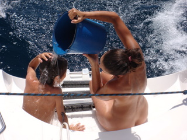
La dernière nuit fut plus mouvementée car nous étions sous spi et le vent commençait à forcir, passant de 8 à 18 noeuds progressivement. Nous avons donc été plus vite que prévu et nous sommes arrivés vers 4h du mat. Comme nous ne voulions pas risquer une approche de nuit dans ces îles inconnues, nous avons décidé de faire des ronds dans l'eau pendant une heure et nous avons mouillé aux premières lueurs de l'aube.
28 mai 2009 - D Day (Jour J ou D Dag)
C'est à la fine pointe de l'aube, quand les rayons du soleil naissant rasent les flots assoupis par la nuit étoilée que nous avons levé l'ancre. Nous avons mis le cap au Sud dans une ambiance solennelle, troublée seulement par l'écume des vagues venues nous saluer.
Poséidon était avec nous puisque nous avons eu droit à 15 noeuds de vent, caressant une mer calme en un joli travers. Nous avons vogué calmement, entre 6 et 7 noeuds, vers Ste Lucie, sans que personne ne soit malade à bord. Nous avons bien croisé un cargo au milieu du canal mais sans crainte aucune.
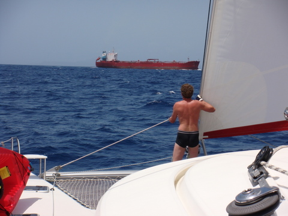
Arrivé à la Soufrière, au sud de Ste Lucie, nous avons pu profiter du paysage grandiose sculpté par les reliefs, tout en sirotant un ti-punch dans le hamac à la tombée de la nuit. Nous étions déjà passé ici l'année passée mais il faut dire que, cette fois, il fait grand bleu et qu'en plus, on a décidé de mouiller au pied du piton. C'est très sympa pour un première navigation.
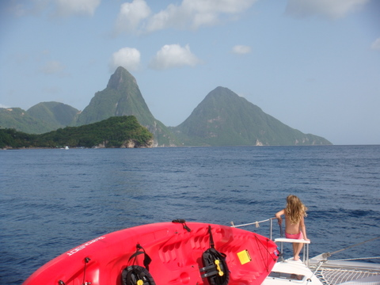
27 mai 2009 - Bilan de l'étape technique
Voilà près de 6 semaines que nous arpentons les pontons du Marin, afin de préparer le bateau pour le grand départ. On finit par se demander si l'on partira un jour. Mais force est de constater que les choses se déroulent lentement sous le soleil des tropiques. De toutes façons, nous attendons toujours notre lettre de pavillon belge (c'est la plaque d'immatriculation du bateau, en quelque sorte), sans laquelle nous ne pouvons quitter le port.
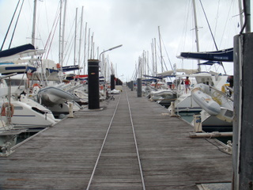
Bref, nous sommes devenus des merriens, plus tout-à-fait terriens mais pas encore marins. Nous avons passé un nombre d'heures invraisemblable à attendre les corps de métier, les pièces détachées, l'arrêt de la pluie ou l'ouverture des magazins spécialisés. Nous avons également pu constater à quel point chaque petite tâche prenait un temps fou sur le bateau. A titre d'exemple, il a bien fallu 10h à Cécile pour installer au moins 5 fois chaque moustiquaire (détruite chaque nuit par les enfants durant leur sommeil). Ces petits tracas ont considérablement allongé le temps de préparation et assez sévèrement grevé le budget. A la longue, ils ont également fini par saper le moral des troupes. Heureusement, il y a aussi des petits plaisirs, comme celui de constater qu'après les aménagements consentis à bord, nous sommes pratiquement autonomes au niveau électrique, surtout quand le soleil brille et qu'il y a du vent.
Nous avons également entamé notre nouvelle vie, ce qui a nécessité à chacun de trouver une nouvelle place au sein du foyer. Papa s'est lancé dans le bricolage à temps plein, que ce soit pour les aménagements ou pour les réparations en tous genres. Maman a entamé sa carrière d'institutrice multi-niveaux. Et les enfants ont dû s'habituer aux classes surchauffées du port et à la vie à bord. Pour les enfants, cela signifie un tas de nouvelles règles, du genre ne rien laisser traîner, éteindre les lumières, ne pas consommer l'eau comme s'il en pleuvait, ne pas jeter la serviette en boule après la baignade et surtout, participer aux tâches diverses, comme faire la vaisselle, par exemple.
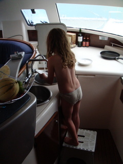
Au final, on ne peut pas dire que ces 40 jours auront été des plus amusants. Mais, d'une part on s'y attendait, d'autre part, on a appris beaucoup de choses, que ce soit sur le plan technique (bateau) ou le plan humain. Maintenant, notre bateau est tout beau, blanc et rouge et nous sommes impatients de partir pour de bon...
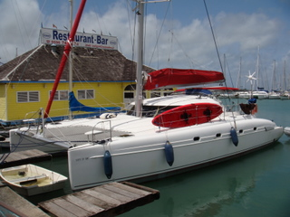